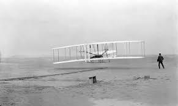

Orville et Wilbur Wright sont deux frères originaires de Dayton dans l'État de l'Ohio aux États-Unis. S'ils ne possèdent initialement qu'un atelier de bicyclettes, la réalisation en 1899 d'un planeur biplan modèle réduit piloté depuis le sol avec Octave Chanute, leur donne l'envie de continuer plus en avant dans cette aventure. Ils réalisent alors un planeur de 5 m 30 d'envergure en 1900, capable d'accueillir un pilote.
C'est le début de l'aventure. Le planeur est amélioré pour mieux planer et atteint une envergure de 9 m 75. Il est doté d'un stabilisateur et d'une gouverne de direction. Ce ne sont pas moins de 700 vols d'une distance de 150 à 200 m que les frères Wright effectueront en 1902. Un autre pas est franchi l'année suivante avec la conception d'un moteur et d'hélices. Le premier vol du Flyer a lieu le 17 décembre 1903, devenant ainsi le premier vol controlé de l'histoire.

Ils n'auront alors de cesse de faire évoluer leur appareil. le Flyer II peut effectuer des virages grâce à une technique de distorsion des ailes ou gauchissement, et le premier vol en circuit fermé de l'histoire de l'aviation a lieu le 20 septembre 1904. En 1905, le Flyer III parvient à réaliser un vol d'une durée record de 39 minutes sur 40 kilomètres,où les Wright parviennent non seulement à décoller et à atterrir, mais aussi à virer et changer d'altitude . En 1908, ils établiront des contacts avec l'armée américaine afin de concevoir un modèle biplace plus puissant, le Flyer Model A.
Les frères Wright réalisent des démonstrations spectaculaires aux États-Unis, mais aussi en France et en Italie. Ils accomplissent notamment l'exploit de voler pendant 2 heures, 20 minutes et 23 secondes, sur une distance de 124,7 km le 31 décembre 1908. C'est en rentrant d'Italie qu'ils fondent en mai 1909 la Wright Company qui existe encore actuellement au sein de Curtiss-Wright Corporation.